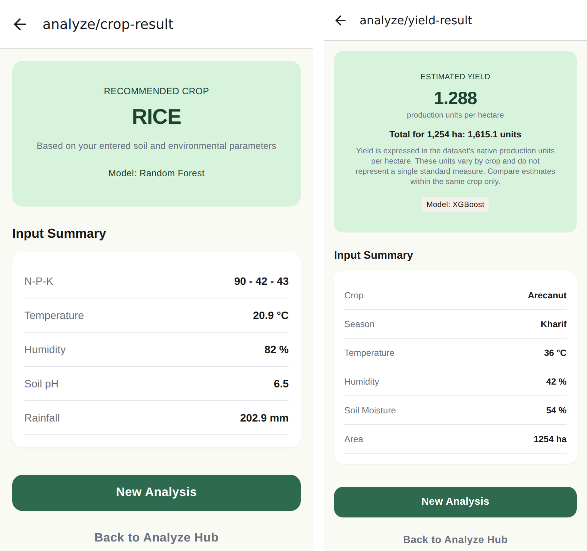

CHENNAI INSTITUTE OF TECHNOLOGY, CHENNAI
Affiliated to Anna University · (Autonomous)
Dept. of Computer Science and Engineering
Dept. of Computer Science and Engineering
AgriSense
ML-Based Crop Recommendation & Yield Intelligence
Analyse · Recommend · Estimate · Decide
INNOVATIVE THINKING – PBLThink · Build · Evaluate
Smarter Sowing,
Better Harvests
Better Harvests
Problem
- Most Indian holdings are small or marginal — crop choice and expected yield rest on inherited experience.
- Soil tests return nutrient values, not decisions. The gap is interpretation, not measurement.
- Shifting rainfall and repeated cropping erode the reliability of that experience.
- Prior ML work rarely reaches the farmer — it ends at a notebook, not a usable tool.
Objectives
- Preprocess two public datasets; derive yield and remove invalid and extreme records.
- Build and iteratively refine classification and regression models.
- Benchmark three models per task against a baseline, then tune the winner.
- Evaluate with accuracy, precision, recall, F1 and RMSE, MAE, R².
- Deliver the trained models through a REST API and a mobile client.
Our Approach
Two supervised tasks behind one app:
- Classification — recommend 1 of 22 crops from N, P, K, temperature, humidity, pH, rainfall.
- Regression — estimate yield per hectare from crop, season, area and conditions.
- Three models compared per task; the winner tuned by grid search and cross-validated.
- Served through a REST API and consumed by a React Native app.
Not just a model — a decision a farmer can act on.
Key Features
Crop Recommendation22 balanced classes
Yield Estimationunits per hectare
Under a Secondmodels cached in memory
Feature Importancewhy the model chose it
Mobile AppReact Native · Expo
22 Automated Tests9 ML + 13 API
System Architecture
INGEST
two CSVs
›
CLEAN
derive yield
›
ENCODE
split 80/20
›
COMPARE
3 models
›
TUNE
GridSearchCV
›
VALIDATE
5-fold CV
›
SERVE
REST + app

Three layers, ML layer as the single source of truth. The API imports the inference module rather than
reimplementing it — a parity test asserts endpoint output equals direct model output to 1e-5.
ML Models & Dataset
Models compared
- Logistic / Linear Regression — baselines
- Random Forest — winner, crop recommendation
- XGBoost — winner, yield estimation
Datasets
Crop Recommendation — 2,200 rows · 7 features ·
22 balanced classes, 100 each · stratified 80/20 → 1,760 / 440
Indian Crop Production — 49,999 rows → 48,681 cleaned · 75 crops · 6 seasons ·
Yield = Production ÷ Area · clipped 1st–99th pct · 15,000 sampled → 12,000 / 3,000
Prototype / Example
CROP RECOMMENDATION
N-P-K 90-42-43 · 20.9 °C · 82% humidity · pH 6.5 · 202.9 mm
RICE
Random Forest · 22 crops analysed
YIELD ESTIMATION
Arecanut · Kharif · 1,254 ha · 36 °C · 42% · soil 54%
1.288 units / ha
XGBoost · total 1,615.1 units

Result screens from the running app against the live REST backend — values match direct model output exactly
Results & Evaluation
99.55%
Test accuracy
CV 0.9927 ± 0.0039
CV 0.9927 ± 0.0039
0.7403
R² — yield
CV 0.7428 ± 0.0254
CV 0.7428 ± 0.0254
| Model | Accuracy | R² |
|---|---|---|
| Logistic / Linear | 0.9727 | 0.0726 |
| Random Forest | 0.9955 | 0.6719 |
| XGBoost | 0.9886 | 0.6946 |
| Tuned winner | 0.9955 | 0.7403 |
Classification — test accuracy (440 records)
Regression — R² (3,000 records)
Confusion matrix: 438 of 440 held-out records correct.
Key finding — yield is driven by crop (0.4949) + season (0.3404) = 84% of importance, which a linear model
over label-encoded integers cannot represent.
Future Enhancements
- Train on all 48,681 cleaned rows instead of a 15,000-row sample.
- Replace the coarse integer weather columns with a meteorological API feed.
- Return class probabilities and prediction intervals as a confidence measure.
- Deploy with authentication and a restricted cross-origin policy.
- Add offline support and regional-language interface options.
Conclusion
AgriSense recommends a crop and estimates its yield from measurements a small-scale farmer can realistically obtain.
A tuned Random Forest classifies 22 crops at 99.55% accuracy; a tuned XGBoost regressor estimates
yield at R² 0.7403. Both are served through a REST API and a mobile app, with an automated parity test asserting
that what the app shows matches the model exactly.
PROJECT TEAM
Kartheeban C — 2104251040406
B Nishanth — 2104251040127
FACULTY GUIDE
Ms. Rajapriya
Dept. of CSE